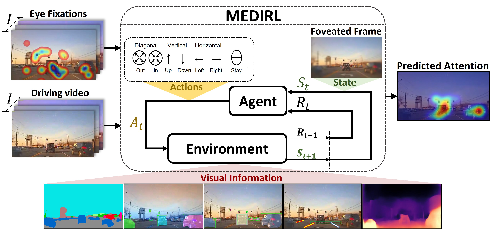
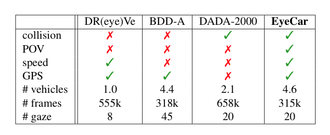

Inspired by human visual attention, we propose a novel inverse reinforcement learning formulation using Maximum Entropy Deep Inverse Reinforcement Learning (MEDIRL ) for predicting the visual attention of drivers in accident-prone situations. MEDIRL predicts fixation locations that lead to maximal rewards by learning a task-sensitive reward function from eye fixation patterns recorded from attentive drivers. Additionally, we introduce EyeCar, a new driver attention dataset in accident-prone situations. We conduct comprehensive experiments to evaluate our proposed model on three common benchmarks: (DR(eye)VE, BDD-A, DADA-2000), and our EyeCar dataset. Results indicate that MEDIRL outperforms existing models for predicting attention and achieves state-of-the-art performance. We present extensive ablation studies to provide more insights into different features of our proposed model.
Project Overview
EyeCar Dataset: We select 21 front-view videos that were captured in various traffic, weather, and day light conditions. Each video is 30sec in length and contains typical driving tasks (e.g., lane-keeping, merging-in, and braking) ending to rear-end collisions. Note that all the conditions were counterbalanced among all the participants. Moreover, EyeCar provides information about the speed and GPS of the ego-vehicle. In addition, each video frame comprises 4.6 vehicles on average, making EyeCar driving scenes more complex than other visual attention datasets. The EyeCar dataset contains 3.5h of gaze behavior (aggregated and raw) from the 20 participants, as well as more than 315,000 rear-end collisions video frames. In EyeCar dataset, we account for the sequence of eye fixations, and thus we emphasize on attention shift to the salient regions in a complex driving scene. EyeCar also provides a rich set of annotations(e.g., scene tagging, object bounding, lane marking, etc.). Compared to prior datasets, EyeCar is the only dataset captured from a point-of-view (POV) perspective, involving collisions, and including metadata for both speedand GPS. EyeCar also has the largest average number of vehicles per scene, and gaze data for 20 participants.

Some results:

Team
 Sonia Baee
Sonia Baee
 Erfan Pakdamanian
Erfan Pakdamanian
 Lu Feng
Lu Feng
 Vicente Ordonez Roman
Vicente Ordonez Roman
Citation
@inproceedings{Baee_2021_ICCV,
title={MEDIRL: Predicting the Visual Attention of Drivers via Maximum Entropy Deep Inverse Reinforcement Learning},
author={Baee, Sonia and Pakdamanian, Erfan and Kim, Inki and Feng, Lu and Ordonez, Vicente and Barnes, Laura},
booktitle={Proceedings of the IEEE/CVF International Conference on Computer Vision (ICCV)},
month={October}
year={2021}
pages={13178-13188}
}